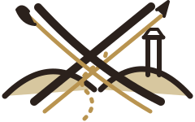

A HISTORICAL-ARCADE HORDE BRAWLER
THE INFERNAL
FECHTSCHULE
Joachim Meyer crosses the Alps to seek out the Italian masters. Change between longsword and dussack, chain short signature combinations, and cut a road through streets, gatehouses, fencing halls, and castle courts.
Controls and signature routes
Tap Duck, then quickly Light or Heavy for a low attack. Direction + Duck dodges. Try Light → Light → Heavy, Heavy → Light, and Parry → Heavy.
A level is a place — a road, a setting, and the waves fought along it. Clearing a wave only brings the next one on: the road, the view, and anything the fallen dropped stay exactly where they were. A level is not over when the last man falls either — the way east bars itself while the place is held, opens when it is clear, and the level ends when you walk out through it. Loot the fallen before you go.
Every wave asks one question. The crowd teaches the press; the town gate narrows the road to a queue of one; the fencing hall gives you a single captain and no crowd; the courtyard opens doors behind you; the flood comes in surges with a lull between them, and the castle road only asks you to stand. Nothing is ever dropped in front of you: every fighter walks in from off the edge of the screen, so what you can see is what is coming.
Fallen arms stay on the road, and the road marks what your hands can take: a gold ring and caret under it mean Switch will pick it up. Nothing is collected by walking over it — step onto the mark and press Switch to take a cudgel, a shaft, or steel off a captain, then press it again to hurl the find at whoever is left. A draught is only offered when you are hurt enough for it to matter. Finds splinter after a few blows.
Original production art and animation. No Little Fighter 2 assets or code are used.
NEW LESSON LEARNED
Lessons of the Road
Each lesson unlocks new combos. The routes below show the exact buttons — they stay yours for the rest of the run.
The host is choosing the shared co-op lesson.
RUN COMPLETE
THE JOURNEY CONTINUES
A name echoes across the castle court.
PAUSED
The Road Waits
EXPERIMENTAL WEBRTC CO-OP
Pair Two Phones
Use the same Wi-Fi or a phone hotspot. Pairing is manual in this slice so the GitHub Pages build needs no signaling server. Exchange the tokens through a message, email, or nearby-share tool.
- Create an invitation and send it to the guest.
- Paste the guest’s answer below.
- Start when the connection indicator turns ready.
- Paste the host invitation.
- Create an answer and return it to the host.
- The game starts when the host begins the run.
No peer connection.